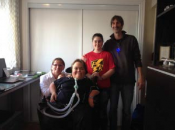

After the Stache Bash Stick Around For:
YUMA COUNTY + Chris Page + Chops & The Holics
Presented by: House Of TARG
Doors: 9pm / Show at 10pm
Cover: $5
Prizes
We have some great prizes this year: the top fundraiser will walk away with two Westjet tickets to anywhere they fly; a couple pairs of hockey tickets; and some other fun stuff for some select growers.
Pledging and Dropping off money
This isn’t all that complicated, here is everything you need to know:
Bring all your money and pledge sheets with you on Friday. Write your name on the pledge sheet. Have it totaled prior to arrival.
Please write a cheque for the cash portion of your pledging. This is a nice-to-have and saves us a lot time and effort. Cheques should be made out to Make-a-Wish Eastern Ontario.
Don’t include donations over paypal on your pledge sheet. At the venue, we will have the total amount pledged to you over paypal.
For those who pledged to you over paypal, they will get a receipt, we have their information.
If you can’t make it on Friday, you have a few options:
drop off your money and pledge sheet to me during business hours at my place of work or on the weekend/evenings to my house – email me for the address and my mobile number
send money to this email address from online banking.
Come celebrate your freshman stache! Same bat time, same bat place: Friday November 7, 7pm – we will convene at House of Targ for weekly mustachery.
Hey! We’re in the Targ Zine (on newstands everywhere) AND every quarter dumped into WWF Wrestlefest is being donated to M4K. Come out and support – the first round of Wrestlefest is on us.
And… Don’t forget: take your pic on friday and send it to us to post to the gallery.
Need some cool stuff to help your campaign? Posters, pins, fake mustaches- we got it all.
We’re kicking off this year with our good friends theUnshaven Mavens at the House of Targ on Thursday, October 30 as they wrap up their campaign. If you’re not sure what an Unshaven Maven is, try to imagine the female version of a M4K. Join us, it’ll be a blast. The good times start around 7pm ((Warning: they may not stop until you shave your stache in December)). We’ll also have some new M4K gear to kick off your campaign.
This year we have a table at the Make a Wish 3 Wishes Gala. Trevor, Mike and I will be there (with dates) and have room at the table for 2 more couples. Tickets are $125 each. We’ve been going for a few years, and it’s a blast. Send an email to info@m4kottawa.org. Its Sat Nov 22nd, click for more info.
I’ve posted an article on the impact you make – its the wish stories of the kids we help. Be proud of it, share it around – you could even send it in an email to your donors from last year. Read more here: You Grew A Mustache For These Kids
Stache Bash and the weekly check ins will be held at House of Targ. Targ has 20 pinball machines, a bunch of vintage arcade games, cold beer, and really yummy perogies. I will pay for your first pinball game if you come out. We’ll be there around 7pm. More info on Stache Bash later (psst, theres a super special musical guest).
Hayden is a beautiful 5 year old boy with severe epilepsy. When we visited him he told us right away that he wanted to “see Pluto on a big boat!” Hayden’s wish was our command, and we sent him on a Disney Cruise Line®.
He a fantastic time. Hayden loved playing in Andy’s Room (based on the Toy Story character) and in the Oceaneer’s club. He was thrilled to find out that he could get ice cream all day. He danced on the Castaway Cay island and met Mickey Mouse. But the moment he was waiting for was the chance to meet Pluto.
“The look on his face when he met Pluto for the first time made me cry,” Hayden’s mom told us. “The sheer joy on his face was the definite highlight of the wish trip.”
His family thanked us for making Hayden’s dreams come true, and also thanked WestJet for “all of the wonderful help they gave our family to make travelling easier.”
??????Khateyanna’s Wish To Go…to Walt Disney World Resort!
Khateyanna is a sweet 14 year old girl who was born with a hematologic disorder. She is a very active young girl and loves to swim, play volleyball, and dance. Her most cherished wish was to go to Walt Disney World® Resort with her family.
Thanks to Make-A-Wish® Eastern Ontario, her wish came true. During her week- long trip, Khateyanna and her family stayed at Give Kids the World in Florida and visited the many theme parks in the area.
Khateyanna was excited that she got to feed dolphins by hand. In fact there were so many amazing moments on the trip that she took over 700 pictures on her brand new digital camera!
Khateyanna and her family had an amazing time and came back with many wonderful memories. With your support and generosity, we will be able to grant another child’s wish and create new memories for another deserving family.??????
??????Nicolas’s Wish To have… a Montreal Canadiens themed room makeover
Nicolas is a passionate young man, particularly where hockey is concerned. The team he loves and is proud to support is the Montreal Canadiens.
Nicolas suffers from a severe respiratory condition and a genetic disorder. But Nicolas is a strong and positive boy and he doesn’t let his medical condition affect his passion for hockey and the Habs!
For his wish, Nicolas wanted a room makeover that made it easier for him to move around easily and put his things within reach. With the help of IKEA and their volunteers, Make-A-Wish® Eastern Ontario got to work and completely adapted the room to Nicolas’ needs, while incorporating the theme of his favourite team: the Montreal Canadiens!
Nicolas was overjoyed at the makeover and the extra gifts he received. He and his family told us they were overwhelmed by the whole experience and extremely grateful.
?????
big thank you to all who grew for M4K and contributed to its success. We’ve raised $24,000 for Make-a-Wish EO and its going to go a long way to enriching the lives of the Make-a-Wish children. We had a lot of money still trickling in after the finale on Friday which really added a lot to the bottom line. It was a really great year.
A few thank yous: Trevor Kealey and Mike Hollingworth (co-organizers and co-founders), Paul Townsend (di and co-founder), John Kealey (photographer), Craig McCallion (videographer), Melissa Cowell (tshirt and poster design), Capital Printers (t-shirt production). Thanks for helping out.
A big thanks to the Kivuto team. Together they raised close to $5,000 including a top-up from the company. Looking forward to having them back next year.
And what about the Stache Bash? Well, it was ridiculous but as always – it was a blast. Great costumes, good fun, lots of laughs.
With a triumphant 9th inning effort by the growers, M4K made some huge strides just in the final week. And we still have another day to go.
I want to give a big shout out to the team at Kivuto for pulling together with a big team effort. High-fives to the boys team bv02 – if you look close enough you might see one of your M4K organizers there. And if you see any of the leaderboard guys, give them a pat on the back and say “Thanks for being awesome.”
Stache Bash
Two words: dress to impress. And be prepared for a good time.
We have some great prizes this year: the top fundraiser will walk away with two Westjet tickets to anywhere they fly; a couple pairs of hockey tickets; a signed Bergeron Bruins jersey; and then some Oakley sunglasses and golf balls to some select growers.
Pledging and Dropping off money
This isn’t all that complicated, here is everything you need to know:
Bring all your money and pledge sheets with you on Friday. Write your name on the pledge sheet. Have it totaled prior to arrival.
Please write a cheque for the cash portion of your pledging. This is a nice-to-have and saves us a lot time and effort. Cheques should be made out to Make-a-Wish Eastern Ontario.
Don’t include donations over paypal on your pledge sheet. At the venue, we will have the total amount pledged to you over paypal.
For those who pledged to you over paypal, they will get a receipt, we have their information.
If you can’t make it on Friday, you have a few options:
drop off your money and pledge sheet to me during business hours at my place of work or on the weekend/evenings to my house – email me for the address and my mobile number
send money to this email address from online banking.
Every year I am absolutely floored by the impact our efforts have on the families we help.
If you haven’t had the opportunity to talk to a parent of a family helped by Make a Wish, you need to watch this.
But what about YOUR mustache? Why is your mustache amazing? Because it granted these 3 wishes…
Braden’s Wish
Braden is a 9-year-old boy from Ottawa that enjoys swimming, watching movies and playing video games. He suffers for Duchenne Muscular Dystrophy, but he doesn’t let this keep him down! He is known for being quite the conversationalist and loves to talk. Braden was set on either going to Hawaii to see volcanoes, or a home theatre. He quickly decided that he wanted to have a home theatre, so the team at Make-A-Wish got right to work! Braden’s basement was transformed into a full-functioning theatre with comfy chairs, a projector, movie posters, and even a vintage popcorn machine! On wish reveal day, Braden’s father carried him down to the basement and he was shocked! “I think I am going to faint right now!” said Braden.
Jackson’s Wish
Jackson is a 9-year-old boy from Ottawa who absolutely loves the “Brown Bear, Brown Bear, What do you see?” book. He also loves spending time with his family. Jackson suffers from Orphan Genetic Disorder, Autism, Epilepsy and is visually impaired. One of his family’s favourite activities is to bike. Jackson is limited physically by his illnesses and is unable to use a normal bicycle, so it was decided that for his wish, he would receive a custom bike from Motion Specialties. For the wish delivery, all of Jackson’s awesome neighbours threw a block party in honour of the big day. When he saw his bike move for the first time, he was so excited that he dropped his copy of Brown Bear, Brown Bear that he is always glued to and focused on the bike. The neighbours organized a group bike ride to celebrate the arrival of Jackson’s new wheels and made him feel like part of the gang. His sister thanked the Make-A-Wish staff for making it possible for her brother to ride alongside her.
Lucy’s Wish
Lucy is a 10-year-old girl from Ottawa who suffers from Di George Syndrome, a form of pulmonary hypertension. Her favourite thing in the world is My Little Pony, so when it came time to decide on her wish, there was no doubt that she wanted a My Little Pony party. On wish day, Lucy was totally shocked by what was prepared for her at Rogers House! She was surprised by her family and friends, and even a horse that was done up in pink nail polish and braids! She named the horse Rainbow Dash! There were amazing snacks provided, including a very special My Little Pony cake. Lucy was given countless toys, and her room was made over with My Little Pony posters. Her favourite gift was her Ipad that kept her entertained for hours!
Need a motto? Here it is: Grow a Mustache and raise some cash for kids. It’s kind of like getting pledges to run a marathon. Without the exertion, cramping, or dehydration.
We’re getting ready to kick-off this year’s campaign of Mustaches for Kids. I may have said this before, but this year is going to be awesome. There’s a lot of buzz – a lot of buzz. We have a lot of amazing prizes already lined up, a new venue for Stache Bash, amazing tshirts/posters and great new mustache parlay, parables, and portmanteaus.
Above all else, you are making a difference. Last year we raised $21,500. This puts the grand tally just under $150,000. That’s amazeballs. I’m going to send out the stories of our wish kids in about a week or so – something you can share with your supporters.
If you join M4K this year, we promise to never use the word amazeballs again.
What are the dates? November 1st until November 29. Get ready.
A big thank you to all who grew for M4K and contributed to its success. We’ve raised over $21,000 for Make-a-Wish EO and its going to go a long way to enriching the lives of the Make-a-Wish children.
Before I let you loose on the video and photos a few thank yous: Trevor Kealey (co-organizer and emcee), Paul Townsend (di and front desk), John Kealey (photographer), Craig McCallion (videographer), Steve St. Pierre (tshirt and poster design), Jose from Joe Mamma (gave a bike for the top fundraiser), Mike Laska and Fletcher Farms and the Ottawa Valley Pork Producers Association, and Dom Coballe (n-Product gift and Beau’s gift).
What can I say about the Stache Bash… not much. Other than this:
In this final week I ask you to persuade, plea, pry, and pester for pledges. Every little bit helps. The efforts in this last week will probably mean giving another child a life-changing wish. This is the week that actually makes me feel all warm and fuzzy inside. I hope you feel it too.
See you Friday.
Stache Bash
Two words: dress to impress. And be prepared for a good time.
We have prizes for the top fundraisers. Highlights include a bike from Joe Mamma’s (thanks Jose as always), large quantities of pork from Egan Farms, Fletcher Farms and the Ottawa Valley Pork Producers Association (thanks Mike L.), and many other exciting prizes.
Of course there is also the Kevin Janok Award for worst stache. Even though most mustaches are pretty terrific this year, theres always a worst.
Pledging and Dropping off money
This isn’t all that complicated, here is everything you need to know:
Bring all your money and pledge sheets with you on Friday. Write your name on the pledge sheet. Have it totaled prior to arrival.
Please write a cheque for the cash portion of your pledging. This is a nice-to-have and saves us a lot time and effort. Cheques should be made out to Make-a-Wish Eastern Ontario.
Don’t include donations over paypal on your pledge sheet. At the venue, we will have the total amount pledged to you over paypal.
For those who pledged to you over paypal, they will get a receipt, we have their information.
If you can’t make it on Friday, you have a few options:
drop off your money and pledge sheet to me during business hours at my place of work or on the weekend/evenings to my house – email me for the address and my mobile number
send money to this email address from online banking.


{kind=link}
{kind=link}
{kind=link}
{kind=link}
{kind=link}
{kind=link}
{kind=link}
{kind=link}
{kind=link}
{kind=link}
{kind=link}